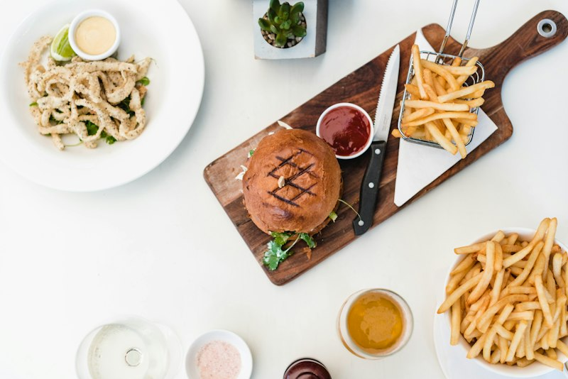
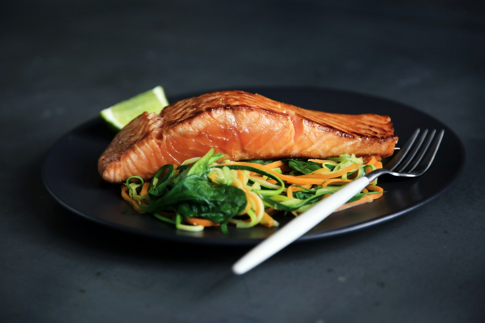

The People Behind Your Catch
Eight years ago we started with one day-boat and a single ice box. Today we connect forty-five coastal crews to thousands of home kitchens — still with the same promise of honesty and freshness.

Founded on the Docks, Not in a Boardroom
Head fishmonger Eleanor Vance spent two decades watching beautiful fish get lost in opaque supply chains. In 2018 she partnered with a handful of day-boat skippers on Pier 4 to sell directly to home cooks — no middlemen, no mystery.
That first winter we delivered twenty boxes a week from the back of a refrigerated van. Today our team of forty specialists handles thousands of orders a month, but every box still carries a traceability card and a name we can stand behind.
- Direct partnerships with 45+ day-boat crews
- Full traceability on every single product
- 0°C–2°C cold chain, certified to HACCP standard
Mission, Vision & Values
Our Mission
To make genuinely fresh, traceable seafood the easy choice for every kitchen — delivered cold, labelled clearly, and priced honestly.
Our Vision
A coastal food system where fishing communities thrive and customers never have to guess where their dinner came from.
Our Values
Integrity in every label, respect for the people who catch our fish, and a stubborn refusal to compromise on freshness.
The MARIS & CATCH Team
Fishmongers, chefs, food-safety specialists and logistics experts — all obsessed with the same thing.
Eleanor Vance
Founder & Head FishmongerTwenty years at the quayside, obsessed with traceability and the perfect fillet.
Marcus Lin
Culinary DirectorFormer coastal restaurant chef who designs our preparation standards and recipes.
Priya Naidoo
Food Safety LeadKeeps every box between 0°C and 2°C, from landing to doorstep.
Tomás Rivera
Sourcing & SustainabilityBuilds relationships with day-boat crews and certified fisheries.
Hana Kim
Head of Customer CareMakes sure every box lands when promised and every question is answered.
Daniel Osei
Logistics ManagerRuns the refrigerated fleet and the two-hour delivery promise.
Milestones on the Water
2018 — One Boat, One Box
First deliveries from Pier 4 with three day-boat partners.2020 — The Chill Fleet
Launch of our telemetry-tracked refrigerated van network.2023 — Subscriptions Launch
Weekly catch boxes and custom plans go live online.2026 — Certified Cold Chain
FDA & HACCP certification across the entire operation.
From Our Customers’ Kitchens
“The prawns arrive sweet and colossal. Our Friday dinners have completely changed.”
“Traceability and consistency I can actually rely on. My kitchen stopped guessing.”
“The traceability card made me trust seafood again. Everything is cold and clean.”
“The family box removed all the weeknight meal planning stress. Brilliant value.”

Come Taste the Difference
Every box carries the people, the boat, and the promise behind it.